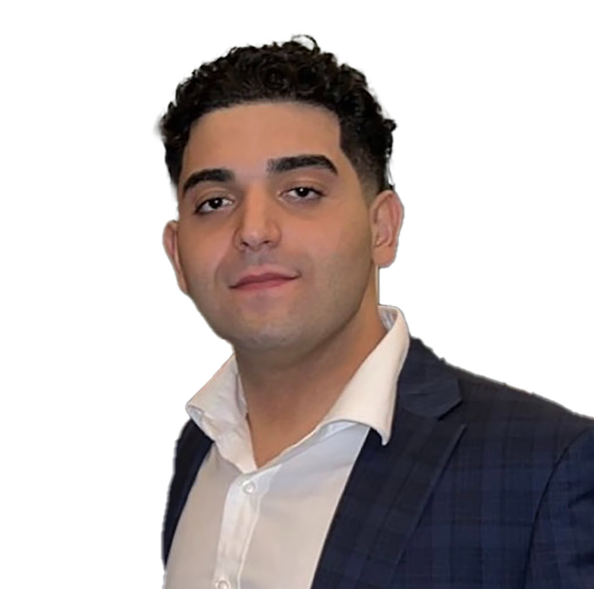

Cody is a native of Grand Rapids, Michigan. He is a Catholic Central High School and Michigan State University, Eli Broad College of Business Alumni. His degree is in Hospitality Business with a focus on Commercial Real Estate Investment. The School of Hospitality Business has been recognized as the #1 program in the nation. After graduation, he returned to his hometown and joined Coldwell Banker Commercial. He specializes in sales and leasing in Hospitality and Retail.
He is experienced in business management, property management, and marketing. His and his Father have a long standing business in the City of Grand Rapids. One of the premier liquor stores in theregion, Hall Street Party Store. Cody has made significant contributions to his father’s business and his investments, which are also all local. He prioritizes efficiency, community engagement and customer satisfaction.
He, along side his father, are involved in the community in which they serve. They make contributions to the community by assisting local churches and businesses within it. They organize events that promote engagement and growth.
His skills, knowledge, and analytics provide unparalleled advantages to the sales and leasing process in this region and beyond. When you have a strong understanding of a community and what it desires, success and longevity are inevitable.